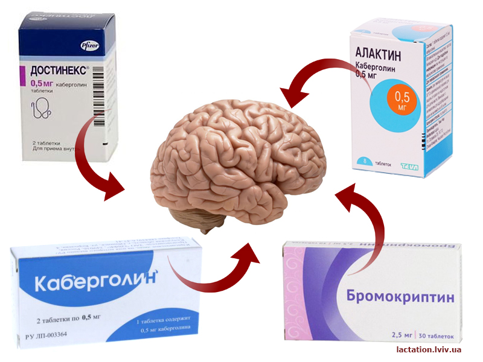
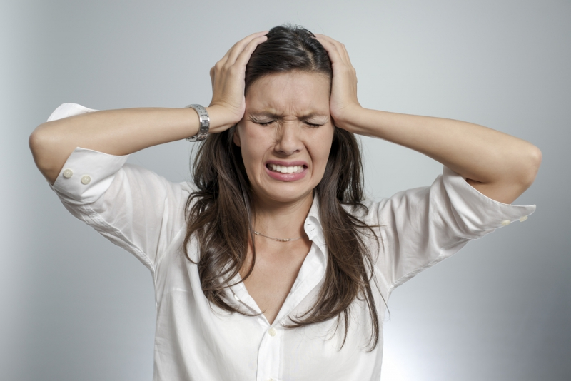

Медикаментозне завершення гв. Чому не варто?

Розповім про один із методів завершення ГВ шляхом відлучення (коли не сама дитина відлучається, а її через певні обставини відлучають від грудей). Мова про медпрепарати такі як Достінекс (Алактин, Каберголін) та Бромокриптин.
Спершу з'ясуємо, звідки ж тече молоко? З мозку. Саме так.
Є гіпофіз. Там розташовані допамінові рецептори, які контролюють виділення пролактину (гормону, який відповідає за вироблення молока та ріст молочної залози). Що ж до популярних препаратів «Достінекс» чи «Бромокриптин», то їх винайшли для лікування пухлин мозку, а саме гіпофіза. А згортання ГВ – це непряма ціль прийому цих таблеток. Єдине – це термінове завершення грудного вигодовування ОДРАЗУ після пологів у випадку смерті дитини чи аборту, серйозних медпоказів чи небажання матері годувати дитину грудним молоком. Це ЕКСТРЕННІ випадки (1).
Чому одразу?
Ці препарати діють на рівень пролактину у крові: вони його знижують. Проте тільки за умови, що він високий, а саме після пологів. Щоправда, за кілька тижнів рівень цього гормону знижується і поступово повертається у довагітну норму (2). І все. Таблетки малоефективні, вони не діють на 100%. А от побічні наслідки дуже серйозні. Недарма ж «Бромокриптин» заборонили використовувати у деяких країнах через ризик інфаркту міокарда, судом чи припадків. Магія «чарівної пігулки» зникає.
І навіть у таких екстренних випадках завершити ГВ можна більш гуманними способами, без гормонального дисбалансу. Пам’ятайте, що таблетки діють не на груди, а на мозок.

Також було проведено клінічні досліди. Мами приймали «Достінекс» для припинення фізіологічної лактації (1 мг одноразово) та пригнічення лактації (по 0,25 мг що12годин протягом 2 днів) – і побічні ефекти відзначили у 14% жінок. Тобто у кожної 7ї!
Сердечно-судинна система: безсимптомне зниження артеріального тиску протягом 3-4 днів після пологів…
Нервова система: втрата свідомості, безсоння, депресія... Травна система: блювання, закреп, гастрит…
Інше: кровотечі з носа, спазми пальців, судоми нижніх кінцівок…
Вчені відзначили зв'язок між прийомом каберголіна (активна речовина «Достінексу») та порушенням функцій печінки, дихальною недостатністю, агресивністю, психотичними розладами... (детальніше – 3).
Зауважу, конкретно для зниження рівня пролактину в крові перед прийомом цього препарату необхідно провести повний аналіз функцій гіпофіза. Яким чином це мало б робитися вдома?
Важливим є і дозування. Це має відбуватися під наглядом, у лікарні. Тому порада: «Та все ок. У мене ж нічого не трапилося»… Мами стверджують, що є і відтерміновані побічні вияви: зменшена кількість молока або його відсутність після наступних пологів.
І зрештою, чи порадники готові Вас лікувати, якби раптом що?
Бонусом додам, що справитись із лактостазом чи маститом – також не профіль цих медикаментів. І якщо лікар призначає Вам їх, то впевніться у його компетентності та товариській позиції щодо грудного вигодовування. Адже пригнічення лактації – це не метод лікування маститу або лактостазу.
Застосування таких препаратів для завершення/пригнічення ГВ, зважаючи на їхню пряму та побічну дію, не є виправданим у жодному випадку. Повторю, це можна зробити природним, немедикаментозним, методом.
Вибір за Вами.